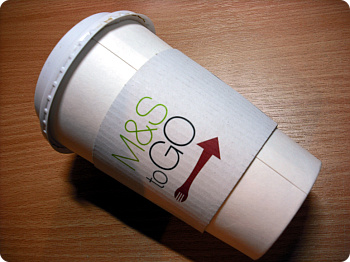
전에 블루워터 놀러갔을때 마신 막스앤스펜서 커피
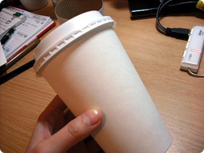
자주가는 카페네로는 종이컵이 흰색도 아닌데다가
이것저것 텍스트라던가 로고가 잔뜩 들어가있어서
그릴자리가 없었는데 아무무늬없는 무지!!!!!!반가워라^^
이것저것 텍스트라던가 로고가 잔뜩 들어가있어서
그릴자리가 없었는데 아무무늬없는 무지!!!!!!반가워라^^
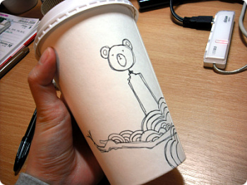
슬금슬금 그리기 시작^^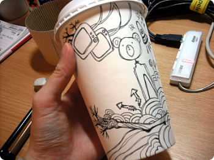
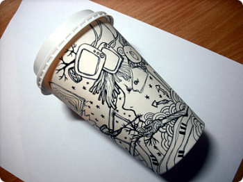
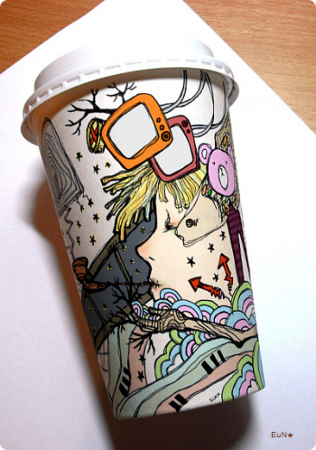
포토샵에서 색칠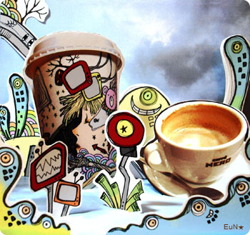
요건 학교 선택수업때 했던 과제
HYBRID란 주제로 사진수업 들었는데
뭐 대체적으로 '니가좋아하는거 해와~' 분위기라^^
잼나게 작업했다
커피숍가서 사진 실컷찍고 + 페이퍼컵 - 요것도 그림그려서 사진찍고 + 나머지는 드로잉
해서 폼보드에 연극무대디자인처럼 반입체로 세워서
이걸 다시 사진을 찍어서(......;;)
포토샵에서 보정 색작업^^*
↓작업과정^^***↓
HYBRID란 주제로 사진수업 들었는데
뭐 대체적으로 '니가좋아하는거 해와~' 분위기라^^
잼나게 작업했다
커피숍가서 사진 실컷찍고 + 페이퍼컵 - 요것도 그림그려서 사진찍고 + 나머지는 드로잉
해서 폼보드에 연극무대디자인처럼 반입체로 세워서
이걸 다시 사진을 찍어서(......;;)
포토샵에서 보정 색작업^^*
↓작업과정^^***↓
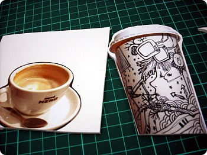
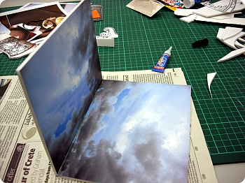
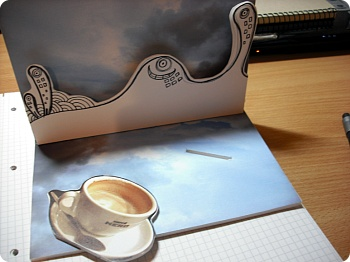
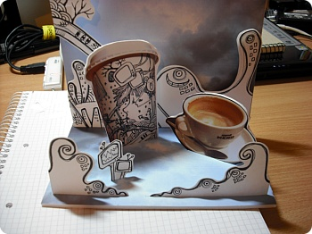
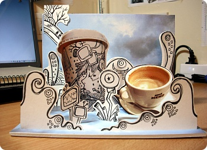
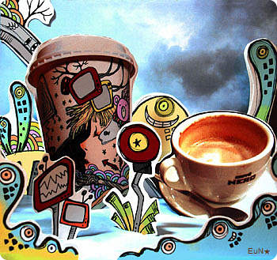
이건 포샵에서 레벨조정한것